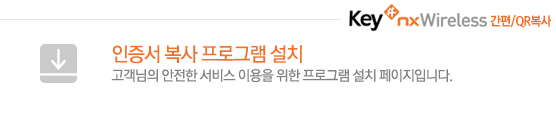
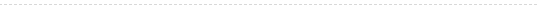

Key# nxWireless 간편복사/QR복사 설치
≫ 하단의 버튼을 눌러 프로그램을 다운로드 받아 설치 하시기 바랍니다.
≫ 수동설치후에 반드시
[새로고침]
을 하거나 해당사이트로 재 접속하여주시기 바랍니다.
≫ 접속PC정보:
브라우저 확장 기능 설치 :
등록하기
브라우저 확장 기능 설치 :
설치 완료
인증서복사 프로그램 설치 :
다운로드
인증서복사 프로그램 설치 :
설치 완료
인증서복사 프로그램 설치(Ubutu용) :
다운로드
인증서복사 프로그램 설치(Ubuntu용) :
설치 완료
인증서복사 프로그램 설치(fedora용) :
다운로드
인증서복사 프로그램 설치(Ubuntu용) :
설치 완료
설치완료 후 장시간 화면이 멈춰있거나 설치가 반복될경우 다음을 확인하시기 바랍니다.
(1) 정상적인 설치/동작확인을 위하여
접속확인
을 선택하여 정상적으로 접속되는지 확인합니다.
설치가 정상적으로 되지 않는 경우에는 사용중인 브라우저를 모두 종료한뒤 [제어판]의 [프로그램 추가제거]에서 [KeySharp CertRelay]삭제 후에 수동설치 파일로 재 설치후 이용하십시오.